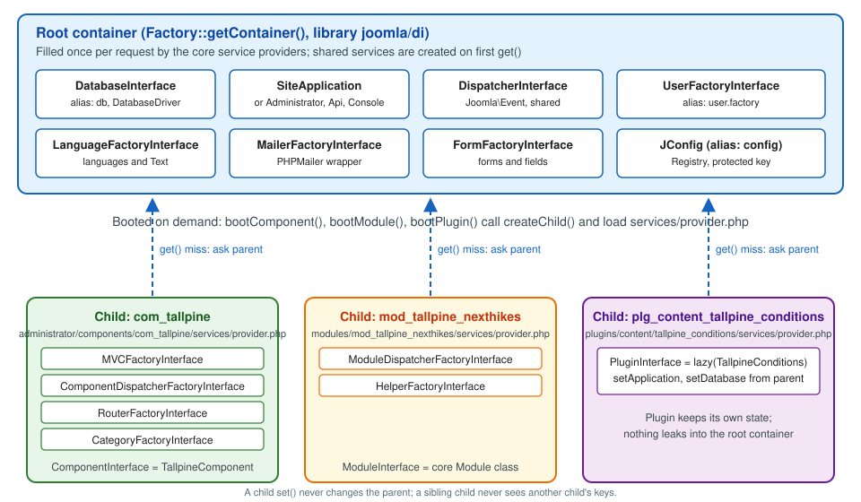

Joomla Namespaces, Autoloading and Dependency Injection
|
This content was generated with the assistance of AI and should be verified against the official documentation before being relied on in production. |
Every Joomla extension written since Joomla 4 is made of namespaced PHP classes that Joomla finds through a generated
map, and instantiates through a dependency injection container. Those two mechanisms, namespaces with autoloading on
one side and the container with its services/provider.php files on the other, are what turn a folder of files into a
component, a module or a plugin. This page explains both in depth: the namespace prefixes that core and third-party
extensions use, the namespace element of the manifest, how a class name becomes a file path under PSR-4, the
autoload_psr4.php file Joomla generates and the moments when it is rebuilt, the container and its child containers,
the services/provider.php file of components, modules and plugins, the service factories that core provides
(MVCFactory, ComponentDispatcherFactory, RouterFactory, CategoryFactory, ModuleDispatcherFactory,
HelperFactory), and the reason Factory::getDbo()-style static calls are discouraged, with the replacements to use for
the application, the database, the user and the language.
It was written against Joomla 6.2 (current, PHP 8.3 or newer) and checked against the Joomla Developer Manual and the
6.2 source tree on 2026-10-30. Joomla 5.4 receives security fixes only; where it differs the text says so. Joomla 4.x and
3.x are end of life. The examples belong to the Tallpine Hiking Club, the fictitious mountain club used across this
sub-section, whose package pkg_tallpine holds the component com_tallpine (namespace Tallpine\Component\Tallpine),
the module mod_tallpine_nexthikes and the content plugin plg_content_tallpine_conditions. The sibling pages build on
this one: Extension types, manifests and packaging shows the
whole manifest, Component MVC: administrator,
Module development and
Plugin development and events fill in the classes that the
providers on this page register, and Database API covers what you do with the database
once you have it. General PHP namespace syntax and Composer autoloading are not repeated here; they are in
Namespaces and autoloading and
Composer and packages.
Why Joomla uses namespaces and a container
Until Joomla 3.x, class names were global and prefixed by convention: JFactory, JModelAdmin, ContentModelArticle,
PlgContentJoomla. The legacy JLoader found them by splitting the name on capitals. Namespaces were introduced
gradually during the 3.x series, and by Joomla 4 nearly every core class was namespaced and extensions were expected to
follow. The benefits are the usual ones: no collisions between extensions, class names that tell you which extension and
which side (site, administrator, API) they belong to, and a standard autoloading rule (PSR-4) that editors, static
analysers and Composer understand.
The container solves a different problem: where does a class get the other objects it needs? In Joomla 3 the answer was
a static call, JFactory::getDbo(), JFactory::getUser(), JFactory::getApplication(), written wherever the object was
needed. That is convenient to type and hard to test, because a unit test cannot replace the real database with a fake
without global state tricks. Joomla 4 introduced the Dependency Injection Container (DIC) of the Joomla Framework
package joomla/di: code asks the container for an object by key (usually an interface name) instead of building it, and
tests register a fake under the same key. The Developer Manual states the aim directly: easier testing through easier
mocking.
Who touches this? The extension developer writes the namespace, the provider and the classes. The administrator or site builder meets it as the occasional fatal error "Class not found" after copying files by hand, or as an extension that works on a laptop and fails on a Linux server. The themer meets it less, but templates also declare a namespace (see Building a template from scratch), and the introduction to Joomla architecture places both mechanisms in the request lifecycle.
Namespace prefixes
A namespace prefix is the leading part of a fully qualified class name (FQN) that Joomla maps to one directory. The first column of the table is the prefix pattern, the second the folder that holds the classes for it.
| Extension type | Prefix pattern | Maps to |
|---|---|---|
Component, administrator side |
|
|
Component, site side |
|
|
Component, Web Services API side |
|
|
Module, site |
|
|
Module, administrator |
|
|
Plugin |
|
|
Template |
|
|
Library |
the namespace of the library manifest |
a folder under |
For core extensions the vendor segment is Joomla: Joomla\Component\Content\Administrator\View\Articles\HtmlView
lives in administrator/components/com_content/src/View/Articles/HtmlView.php, Joomla\Module\Breadcrumbs\Site\Helper
in modules/mod_breadcrumbs/src/Helper, and Joomla\Plugin\Fields\Calendar in plugins/fields/calendar/src. A
third-party extension uses its own vendor name. The Tallpine extensions use Tallpine:
-
Tallpine\Component\Tallpine\Administratormaps toadministrator/components/com_tallpine/src -
Tallpine\Component\Tallpine\Sitemaps tocomponents/com_tallpine/src -
Tallpine\Component\Tallpine\Apimaps toapi/components/com_tallpine/src -
Tallpine\Module\NextHikes\Sitemaps tomodules/mod_tallpine_nexthikes/src -
Tallpine\Plugin\Content\TallpineConditionsmaps toplugins/content/tallpine_conditions/src
The vendor segment is free (usually the company or project), the type segment (Component, Module, Plugin,
Template) is required, and the name segment should match the extension name. Core classes outside extensions follow
two further rules: Joomla\CMS maps to libraries/src, and Joomla\<Other> maps to libraries/vendor/<other>/src,
which is where the Joomla Framework packages live (Joomla\Event is in libraries/vendor/joomla/event/src, Joomla\DI
in libraries/vendor/joomla/di/src). Names that do not start with Joomla come from other directories under
libraries/vendor/: third-party packages such as PHPMailer, Symfony components or Laminas libraries, loaded through
Composer’s own class map and PSR-4 entries. The mapping rules above are the general standard and the Manual notes that
exceptions exist, so the authoritative list for a given site is the generated map described below.
Reading a fully qualified class name
A class name tells you the extension, the side and the role. Take
Tallpine\Component\Tallpine\Administrator\Controller\TrailController:
-
Tallpineis the vendor -
Component\Tallpinesays it belongs tocom_tallpine -
Administratorsays it is loaded for the back end only -
Controller\TrailControlleris the path undersrc(Controller/TrailController.php) and the role
Because the site and administrator trees have distinct FQNs, a site class and an administrator class can have the same short name and live together. A site model can even extend its administrator counterpart with an alias:
<?php
namespace Tallpine\Component\Tallpine\Site\Model;
use Tallpine\Component\Tallpine\Administrator\Model\TrailModel as AdministratorTrailModel;
\defined('_JEXEC') or die;
/**
* The site trail model reuses the administrator model's form and table handling.
*/
class TrailModel extends AdministratorTrailModel
{
}Several short names recur in core and are easy to confuse, so check the use statement:
-
Registryis eitherJoomla\Registry\Registry(a data structure, the one you want for parameters) orJoomla\CMS\HTML\Registry(the registry of HTML helper services) -
CategoryFactoryis either the factoryJoomla\CMS\Categories\CategoryFactoryor the service providerJoomla\CMS\Extension\Service\Provider\CategoryFactorythat registers it (the same applies toMVCFactory,RouterFactory,HelperFactoryand the two dispatcher factories) -
DispatcherInterfaceisJoomla\CMS\Dispatcher\DispatcherInterfacefor component and module dispatchers, andJoomla\Event\DispatcherInterfacefor the event dispatcher that plugins use
Declaring a namespace in the manifest
An extension tells Joomla its namespace with a namespace element in its manifest. The path attribute is the folder
(relative to the extension folder) that holds the classes:
<?xml version="1.0" encoding="utf-8"?>
<extension type="component" method="upgrade">
<name>com_tallpine</name>
<author>Tallpine Hiking Club</author>
<version>1.0.0</version>
<description>COM_TALLPINE_XML_DESCRIPTION</description>
<namespace path="src">Tallpine\Component\Tallpine</namespace>
<administration>
<files folder="administrator">
<folder>forms</folder>
<folder>services</folder>
<folder>src</folder>
<folder>tmpl</folder>
<file>access.xml</file>
<file>config.xml</file>
</files>
</administration>
<files folder="site">
<folder>src</folder>
<folder>tmpl</folder>
</files>
</extension>Note what is not in the manifest: the Site, Administrator and Api suffixes. Joomla adds them itself, so the
manifest declares only Tallpine\Component\Tallpine. A module declares Tallpine\Module\NextHikes and a plugin
declares the group and name (Tallpine\Plugin\Content\TallpineConditions), because a plugin has only one tree.
Form prefixes: the one place XML needs a namespace
XML has no use statements, so a form definition that references a custom field type or validation rule written as a
class must give the namespace explicitly with addfieldprefix and addruleprefix on the form element:
<form addfieldprefix="Tallpine\Component\Tallpine\Administrator\Field"
addruleprefix="Tallpine\Component\Tallpine\Administrator\Rule">
<fieldset name="trail">
<field name="difficulty" type="TrailDifficulty" label="COM_TALLPINE_FIELD_DIFFICULTY" />
<field name="gpx_file" type="media" label="COM_TALLPINE_FIELD_GPX" validate="GpxFile" />
</fieldset>
</form>The field class TrailDifficultyField is then found in administrator/components/com_tallpine/src/Field. The forms
themselves are covered in Forms and form fields.
How a class name becomes a file path
PSR-4 is a three-step rule that Joomla applies through the map:
-
Match the longest registered prefix against the start of the class name. For
Tallpine\Component\Tallpine\Administrator\View\Trails\HtmlViewthe prefix isTallpine\Component\Tallpine\Administrator\. -
Look up the base directory of that prefix:
administrator/components/com_tallpine/src. -
Replace the remaining namespace separators with directory separators and append
.php.
Class Tallpine\Component\Tallpine\Administrator\View\Trails\HtmlView
Prefix Tallpine\Component\Tallpine\Administrator\
Base dir administrator/components/com_tallpine/src
Remainder View\Trails\HtmlView
File administrator/components/com_tallpine/src/View/Trails/HtmlView.phpThe file must contain exactly one class whose name equals the file name, and the folder layout under src is yours:
the directory names Controller, Model, View, Table, Extension, Dispatcher, Service, Helper, Field and
Rule are only conventions, but several of them are looked up by name by the factories described later, so keep them.
Pitfalls with namespaces
-
Capitalisation. The namespace, the directory names and the file names must match exactly. Windows and the default macOS file system ignore case, Linux does not, so an extension with
Models/TrailModel.phpdeclared as...\Model\TrailModelworks on a laptop and throws "Class not found" on the production server. -
No install-time check. Joomla does not validate the namespace or the layout while installing. A wrong
path, a misspelled vendor or a missingsrcfolder shows up only when the class is first needed. -
The manifest must be where the mapper looks. The map is built from the installed manifests (see the next section), not from your source repository. For a component Joomla reads
administrator/components/com_tallpine/tallpine.xml(orcom_tallpine.xml), so the manifest has to be copied there by the installer. Hand-copying only thesrcfolder leaves the extension without a namespace. -
The global namespace. Inside a namespaced file,
ExceptionmeansTallpine\...\Exception. Write\Exception,\stdClassand, for speed,\strlen(); core files do this consistently. -
The first character. Do not start a namespace segment with a digit or an unusual character; use letters.
-
Do not put your classes in a core namespace. A third-party class in
Joomla\...is silently wrong when the core one of the same name appears in a later release.
The generated map: autoload_psr4.php
Joomla does not hard-code the prefixes of extensions. Instead, when an application starts, it builds (or loads) one file that lists every prefix and folder:
-
the class
JNamespacePsr4Map(filelibraries/namespacemap.php) scans the installed components, modules, templates, plugins and libraries -
for each extension it opens the installed manifest, reads the
namespaceelement and itspathattribute, and computes the prefixes:Site,AdministratorandApifor components (each only if the folder exists),SiteorAdministratorfor modules and templates, none for plugins and libraries -
it sorts the result and writes it to
administrator/cache/autoload_psr4.php(the constantJPATH_CACHEpoints toadministrator/cachefor all three client applications) -
on every request
CMSApplication::execute()callscreateExtensionNamespaceMap(), which loads the file and registers each prefix with Composer’s class loader (setPsr4()); the console application and the installer application do the same
The file is plain PHP that returns an array. For a site with the Tallpine package installed, the relevant lines look like this (the real file is much longer and also lists every core extension):
<?php
defined('_JEXEC') or die;
return [
'Tallpine\\Component\\Tallpine\\Administrator\\' => [JPATH_ADMINISTRATOR . '/components/com_tallpine/src'],
'Tallpine\\Component\\Tallpine\\Api\\' => [JPATH_API . '/components/com_tallpine/src'],
'Tallpine\\Component\\Tallpine\\Site\\' => [JPATH_SITE . '/components/com_tallpine/src'],
'Tallpine\\Module\\NextHikes\\Site\\' => [JPATH_SITE . '/modules/mod_tallpine_nexthikes/src'],
'Tallpine\\Plugin\\Content\\TallpineConditions\\' => [JPATH_PLUGINS . '/content/tallpine_conditions/src'],
];Source: Joomla Manual: Class Autoloading
Open this file whenever a class is "not found": if your prefix is missing, the map is stale or the manifest has no
namespace element; if the prefix is there, the problem is the path or the capitalisation.
When the map is rebuilt
The file is a cache, and the cost of rebuilding it is a scan of every extension folder, so Joomla rebuilds it only when something may have changed:
-
The file does not exist.
JNamespacePsr4Map::load()creates it on the spot. Deleting the file is therefore the supported way to force a rebuild. -
An extension is installed, updated or uninstalled. The plugin Extension - Namespace Map (
plg_extension_namespacemap, in theextensionplugin group) listens toonExtensionAfterInstall,onExtensionAfterUpdateandonExtensionAfterUninstalland callscreate(). Do not disable that plugin: with it off a newly installed extension is not mapped until the file is deleted by hand. -
Joomla itself is updated. The core update (the Joomla Update component, its extraction and finalisation steps, and the
update:coreconsole command) deletesadministrator/cache/autoload_psr4.phpso the next request regenerates it, because the set of core namespaces may have changed. -
You copy files by hand. Unpacking an extension into the web root,
git pullon a development site, or a Docker bind-mount that shares asrcfolder do not fire any event. Delete the file yourself.
# Docker Compose development site (service name "joomla", Joomla in /var/www/html)
docker compose exec joomla rm -f administrator/cache/autoload_psr4.php
# Plain server, from the Joomla root
rm -f administrator/cache/autoload_psr4.phpSource: Joomla Manual: Class Autoloading
The next request recreates the file, which needs write access to administrator/cache. If the folder is not writable,
Joomla logs a warning ("Could not save …/autoload_psr4.php"), keeps the map in memory for that request and carries
on; this is deliberate, so that the page still renders and the real error can be displayed later. The cost is a rescan
on every request, which is slow, so fix the permissions (see
configuration.php and .htaccess and
System information, maintenance and troubleshooting).
Two more points matter when automating deployments:
-
Treat the file as a build artefact of the running site. Do not commit it, and exclude
administrator/cachefrom deployments, so that the target site builds its own. -
A zero-downtime deployment that swaps the whole web root can leave a map that points to the previous release’s folders; delete the file as the last step of the deployment.
Library classes, the class map and the legacy aliases
The namespace map is only for components, modules, templates, plugins and libraries that declare a namespace. The rest
of libraries/ is loaded by the Composer files in libraries/vendor/composer, including the class map for the
framework packages. A third category exists for backward compatibility: the pre-4.0 global names (JFactory, JText,
JModelAdmin, about 450 aliases) that JLoader maps to the namespaced classes through libraries/classmap.php. The
ClassLoader decorator in Joomla\CMS\Autoload calls JLoader::applyAliasFor() when it loads a class, which is how an
old JFactory call reaches Joomla\CMS\Factory.
In Joomla 6 those aliases are not part of the default behaviour: they are provided by the Behaviour - Backward
Compatibility 6 plugin, which is off by default on new installs. Code written for 3.x that still says JFactory::getDbo()
fails on such a site with "Class JFactory not found". The fix is not to switch the plugin on, but to use the namespaced
class and the container (next sections). The wider 6.0 removals are collected in
Deprecations and preparing for Joomla 7, and the book
corrections about it are further down this page.
Third-party libraries and vendor namespaces
An extension can ship its own Composer dependencies in a vendor folder inside its package. Two extensions that bundle
different versions of the same library under the same namespace both register that namespace with the autoloader, and
whichever runs first wins, which causes errors that depend on the order in which extensions load. There are three ways to
stay safe:
-
depend on libraries Joomla already ships (for instance
Joomla\Registry,Joomla\Input,Joomla\Filesystem) and declare nothing new -
prefix the bundled library into your own vendor namespace with a tool such as PHP-Scoper or Mozart, so that
GuzzleHttp\ClientbecomesTallpine\Vendor\GuzzleHttp\Client -
wrap the library in a Joomla library extension (type
library) with its ownnamespaceelement, so that Joomla maps it like any other extension
For development, the Composer file of your source repository can describe the same mapping so that the IDE and static
analysis tools find the classes without a running site. The paths below assume the package layout of the Tallpine
repository (src/administrator, src/site, src/api, src/mod_tallpine_nexthikes and so on):
{
"name": "tallpine/pkg-tallpine",
"type": "project",
"require": {
"php": "^8.3"
},
"autoload": {
"psr-4": {
"Tallpine\\Component\\Tallpine\\Administrator\\": "com_tallpine/administrator/src/",
"Tallpine\\Component\\Tallpine\\Site\\": "com_tallpine/site/src/",
"Tallpine\\Component\\Tallpine\\Api\\": "com_tallpine/api/src/",
"Tallpine\\Module\\NextHikes\\Site\\": "mod_tallpine_nexthikes/src/",
"Tallpine\\Plugin\\Content\\TallpineConditions\\": "plg_content_tallpine_conditions/src/"
}
}
}This file is for the development tools only. On a real site the generated autoload_psr4.php is the only mapping that
counts, and Joomla never reads your Composer file.
The dependency injection container
The container of the Joomla Framework (Joomla\DI\Container, package joomla/di, version 4 in Joomla 6.2) is a
repository of keys and values. The key is a string, almost always the fully qualified name of an interface or class; the
value is either an object or a function that creates one. Requesting by an interface name or a class name makes no
functional difference to the container: the key is just a string, so the same string must be used to store and to fetch.
The container methods
| Method | What it does |
|---|---|
|
Registers a value or a factory function under a key. By default the entry is not shared, so a function is called on
every |
|
Like |
|
A shortcut for a protected key. Core uses it so that an extension cannot overwrite a core service in the root container. |
|
Returns the resource. Throws |
|
Tells whether the key is known here or in a parent. Use it before fetching an optional service (the |
|
Makes a second name resolve to the same entry. Core aliases |
|
Returns a new container whose |
|
Calls |
|
Wraps an existing entry, so that its result is modified after it is created. |
|
Creates a fresh object from a shared key, bypassing the stored instance. |
|
Creates an object of a class by reading the type declarations of its constructor and fetching each class-typed argument from the container (autowiring). Arguments that are scalar and have no default cannot be wired. |
|
Returns a callable that creates a PHP lazy proxy of the class: the factory runs only when a property or method of the object is first used. |
Two details deserve emphasis. The first is the non-shared default: set() on its own produces a new object on every
get(). Joomla core registers its services with share(), which is why a single database connection serves a request;
extension providers that register an extension class with set() are saved from repeated construction by the extension
manager’s own cache, described below. The second is lazy(). It relies on PHP 8.4 lazy objects; on PHP 8.3, which is
the minimum for Joomla 6, it simply returns the factory, so the object is created eagerly and the code still works. Core
plugins use it because most plugins are registered on a request but never receive a matching event.
The root container and the core services
The root container is built by Factory::getContainer() the first time it is called. Factory::createContainer()
registers about two dozen core service providers from libraries/src/Service/Provider: Application,
Authentication, CacheController, CaptchaRegistry, Config, Console, Database, Dispatcher, Document,
EditorsRegistry, Form, HTMLRegistry, Input, Language, Logger, Mailer, Menu, Pathway, Router,
Session, Toolbar, User and WebAssetRegistry. The keys that extension code uses most are:
| Key | Type it returns | Use it for |
|---|---|---|
|
the database driver |
queries (alias |
|
|
loading users by id or username without static calls |
|
|
creating a |
|
|
creating a mailer |
|
|
building |
|
|
caches |
|
the event dispatcher |
dispatching custom events |
|
the session |
reading or writing session data |
|
a |
server-side settings, a protected key |
|
the application object |
normally reached with |
The application is itself built by the container: the Application provider creates SiteApplication,
AdministratorApplication, ApiApplication or ConsoleApplication and injects the dispatcher, the logger, the session,
the user factory and the menu factory. Reading the configuration through the container looks like this, and the Manual’s
walkthrough of it is a good first read:
<?php
use Joomla\CMS\Factory;
\defined('_JEXEC') or die;
// Outside of a class that can receive its dependencies (a script file, a legacy layout).
$container = Factory::getContainer();
// Both keys return the same shared Registry.
$config = $container->get('config');
$sitename = $config->get('sitename');
// The application also exposes the configuration.
$app = Factory::getApplication();
$sitename2 = $app->get('sitename', 'Tallpine Hiking Club');Source: Joomla Manual: JConfig Example
Factory::getContainer() and Factory::getApplication() are the two static entry points that remain supported. Use them
at the outer edge only (a provider, a script file, a legacy layout), never in the middle of a class that could receive
the object by injection.
Child containers and the extension boot sequence
Joomla does not register extension services in the root container. When an extension is booted, the application creates a child container just for it. A child holds a pointer to its parent and behaves like the parent with two differences:
-
set()writes into the child only, so an extension cannot overwrite core keys or collide with another extension that also registersComponentInterface,MVCFactoryInterfaceorPluginInterface -
get()looks in the child first and, when the key is missing, asks the parent; that is how a module’sHelperFactoryreceives the root container’sDatabaseInterfacewithout being given it
The code that does this is the trait Joomla\CMS\Extension\ExtensionManagerTrait, used by the application classes. The
three public methods are bootComponent(), bootModule() and bootPlugin(); all call the same private loadExtension():
The steps, in the order the source performs them:
-
The name is normalised (
com_tallpineandtallpineboth work) and the application looks foradministrator/components/com_tallpine/services/provider.php; modules look inmodules/mod_nameoradministrator/modules/mod_name, and plugins inplugins/group/name. -
If the extension was already booted during this request, the cached object is returned immediately (the cache is a static array in
ExtensionHelper). -
A child container is created and the event
onBeforeExtensionBootis dispatched with the child as an argument, which lets a system plugin register or override services before the provider runs. -
The provider file is loaded with
require_onceand, if it returned an object implementingJoomla\DI\ServiceProviderInterface, itsregister()method receives the child container. -
If the provider did not register the extension type, Joomla falls back to legacy behaviour: a component becomes a
LegacyComponentthat includes the oldtallpine.phpentry file, a module becomes a coreModulewith empty namespaces, and a plugin is loaded fromplugins/group/name/name.phpwith the oldPlgGroupNameclass naming. A missing or brokenservices/provider.phptherefore does not always fail loudly; it can silently run the legacy path or aDummyPlugin. -
onAfterExtensionBootis dispatched. -
The extension object is fetched with
get(). If it implementsBootableExtensionInterface,boot($container)is called, which is the place to register HTML helper services or other things that need the container. -
The object is cached and returned.
The pattern is the same for the three types, but the key differs: ComponentInterface::class, ModuleInterface::class
and PluginInterface::class. Because the default entry of set() is not shared, calling the factory function twice is
avoided by this extension cache rather than by the container.

services/provider.php for a component
The provider is a PHP file that returns an object implementing ServiceProviderInterface. Core and the Manual use an
anonymous class, which has no name to collide with. For a component the file registers the factories and then the
extension class. The com_tallpine provider, modelled on the one of com_content:
<?php
/**
* @package Tallpine.Administrator
* @subpackage com_tallpine
*
* @copyright (C) 2026 Tallpine Hiking Club
* @license GNU General Public License version 2 or later; see LICENSE.txt
*/
\defined('_JEXEC') or die;
use Joomla\CMS\Categories\CategoryFactoryInterface;
use Joomla\CMS\Component\Router\RouterFactoryInterface;
use Joomla\CMS\Dispatcher\ComponentDispatcherFactoryInterface;
use Joomla\CMS\Extension\ComponentInterface;
use Joomla\CMS\Extension\Service\Provider\CategoryFactory;
use Joomla\CMS\Extension\Service\Provider\ComponentDispatcherFactory;
use Joomla\CMS\Extension\Service\Provider\MVCFactory;
use Joomla\CMS\Extension\Service\Provider\RouterFactory;
use Joomla\CMS\HTML\Registry;
use Joomla\CMS\MVC\Factory\MVCFactoryInterface;
use Joomla\DI\Container;
use Joomla\DI\ServiceProviderInterface;
use Tallpine\Component\Tallpine\Administrator\Extension\TallpineComponent;
return new class () implements ServiceProviderInterface {
/**
* Registers the service provider with a DI container.
*
* @param Container $container The DI container (a child container for this component).
*
* @return void
*/
public function register(Container $container): void
{
$namespace = '\\Tallpine\\Component\\Tallpine';
// Step 1: the factories this component needs.
$container->registerServiceProvider(new CategoryFactory($namespace));
$container->registerServiceProvider(new MVCFactory($namespace));
$container->registerServiceProvider(new ComponentDispatcherFactory($namespace));
$container->registerServiceProvider(new RouterFactory($namespace));
// Step 2: the extension class, with its sub-dependencies injected.
$container->set(
ComponentInterface::class,
function (Container $container) {
$component = new TallpineComponent($container->get(ComponentDispatcherFactoryInterface::class));
$component->setRegistry($container->get(Registry::class));
$component->setMVCFactory($container->get(MVCFactoryInterface::class));
$component->setCategoryFactory($container->get(CategoryFactoryInterface::class));
$component->setRouterFactory($container->get(RouterFactoryInterface::class));
return $component;
}
);
}
};Points to notice:
-
The two steps are the whole pattern: register the dependencies, then build the extension and hand it its dependencies with
get()calls inside the closure. The closure runs only when the extension is first fetched, so registering a provider costs almost nothing. -
The namespace passed to each factory has a leading backslash and no
Site,AdministratororApisuffix. The factories add the suffix of the current application, which is how one provider serves all three sides. -
A component that has no categories, no SEF router or no HTML services simply leaves those lines out. The smallest working provider registers
MVCFactory,ComponentDispatcherFactoryand anMVCComponent. -
The provider lives in the administrator folder (
administrator/components/com_tallpine/services/provider.php) and serves the site and the API too, becausebootComponent()always looks there. -
The file starts with
defined('_JEXEC') or die;like every Joomla PHP file. Since 6.0,JPATH_PLATFORMis no longer defined unless the backward-compatibility plugin runs, so never use the older guard that tests it.
The extension class is where the traits that match the providers are mixed in. It is the component’s entry object:
<?php
namespace Tallpine\Component\Tallpine\Administrator\Extension;
use Joomla\CMS\Categories\CategoryServiceInterface;
use Joomla\CMS\Categories\CategoryServiceTrait;
use Joomla\CMS\Component\Router\RouterServiceInterface;
use Joomla\CMS\Component\Router\RouterServiceTrait;
use Joomla\CMS\Extension\BootableExtensionInterface;
use Joomla\CMS\Extension\MVCComponent;
use Joomla\CMS\HTML\HTMLRegistryAwareTrait;
use Psr\Container\ContainerInterface;
use Tallpine\Component\Tallpine\Administrator\Service\HTML\TrailIcon;
\defined('_JEXEC') or die;
/**
* Component class for com_tallpine.
*/
class TallpineComponent extends MVCComponent implements
BootableExtensionInterface,
CategoryServiceInterface,
RouterServiceInterface
{
use CategoryServiceTrait;
use RouterServiceTrait;
use HTMLRegistryAwareTrait;
/**
* Called by Joomla right after the component was fetched from its child container.
*/
public function boot(ContainerInterface $container): void
{
$icon = new TrailIcon();
$icon->setUserFactory($container->get(\Joomla\CMS\User\UserFactoryInterface::class));
$this->getRegistry()->register('trailicon', $icon);
}
}boot() receives the child container, so everything the provider registered and everything of the root container is
available. This is the supported place to read a service when the component loads, instead of calling Factory:: from
the constructor.
What each service factory does
Each Joomla\CMS\Extension\Service\Provider\* class is a small ServiceProviderInterface that stores a namespace and,
in register(), sets one interface key to a closure that creates the real factory. They all work by building class
names from the namespace, which is why the directory conventions mattered earlier.
| Provider (constructor argument) | Key it registers | What the factory it creates does |
|---|---|---|
|
|
Creates controllers, models, views and tables for the component by building
|
|
|
Creates the dispatcher of the current side, |
|
|
Creates the SEF router |
|
|
Creates the category tree objects of the component by instantiating |
|
|
Creates |
|
|
Creates helper objects by name: |
|
|
Builds the core |
Because the lookups are by class name, the commonest namespace errors turn into specific symptoms:
-
a controller in
Controllers\TrailControllerinstead ofController\TrailControllermakes theMVCFactoryreturnnullfor it, and the component fails with a "controller not found" style error rather than a "class not found" one -
a router in
Service\Routerthat is missing gives "No router available for this application" -
a missing
Site\Dispatcher\Dispatcheris not an error at all: the generic dispatcher runs, which is correct for simple components and a surprise for a developer who expected theirdispatch()override to be called
services/provider.php for a module
A module’s provider is shorter, because a module has no MVC factory. It registers the dispatcher factory, the helper
factory and the core Module provider. The module namespace is Tallpine\Module\NextHikes and its helpers live in the
sub-namespace Site\Helper:
<?php
/**
* @package Tallpine.Site
* @subpackage mod_tallpine_nexthikes
*
* @copyright (C) 2026 Tallpine Hiking Club
* @license GNU General Public License version 2 or later; see LICENSE.txt
*/
\defined('_JEXEC') or die;
use Joomla\CMS\Extension\Service\Provider\HelperFactory;
use Joomla\CMS\Extension\Service\Provider\Module;
use Joomla\CMS\Extension\Service\Provider\ModuleDispatcherFactory;
use Joomla\DI\Container;
use Joomla\DI\ServiceProviderInterface;
return new class () implements ServiceProviderInterface {
public function register(Container $container): void
{
$container->registerServiceProvider(new ModuleDispatcherFactory('\\Tallpine\\Module\\NextHikes'));
$container->registerServiceProvider(new HelperFactory('\\Tallpine\\Module\\NextHikes\\Site\\Helper'));
$container->registerServiceProvider(new Module());
}
};The pieces connect like this. ModuleHelper boots the module, so the child container is built and the provider runs.
Module::getDispatcher() asks the dispatcher factory for Tallpine\Module\NextHikes\Site\Dispatcher\Dispatcher, and if
that class implements HelperFactoryAwareInterface the module object injects the helper factory into it. The dispatcher
then asks for helpers by name:
<?php
namespace Tallpine\Module\NextHikes\Site\Dispatcher;
use Joomla\CMS\Dispatcher\AbstractModuleDispatcher;
use Joomla\CMS\Helper\HelperFactoryAwareInterface;
use Joomla\CMS\Helper\HelperFactoryAwareTrait;
\defined('_JEXEC') or die;
/**
* Dispatcher class for mod_tallpine_nexthikes.
*/
class Dispatcher extends AbstractModuleDispatcher implements HelperFactoryAwareInterface
{
use HelperFactoryAwareTrait;
protected function getLayoutData(): array
{
$data = parent::getLayoutData();
// The factory builds Tallpine\Module\NextHikes\Site\Helper\NextHikesHelper and injects the database.
$helper = $this->getHelperFactory()->getHelper('NextHikesHelper');
$data['hikes'] = $helper->getNextHikes($data['params'], $data['app']);
return $data;
}
}The helper uses the Aware interface for the database; the factory sees DatabaseAwareInterface and calls
setDatabase():
<?php
namespace Tallpine\Module\NextHikes\Site\Helper;
use Joomla\CMS\Application\CMSApplicationInterface;
use Joomla\Database\DatabaseAwareInterface;
use Joomla\Database\DatabaseAwareTrait;
use Joomla\Database\ParameterType;
use Joomla\Registry\Registry;
\defined('_JEXEC') or die;
class NextHikesHelper implements DatabaseAwareInterface
{
use DatabaseAwareTrait;
/**
* @return array<int, object>
*/
public function getNextHikes(Registry $params, CMSApplicationInterface $app): array
{
$db = $this->getDatabase();
$limit = (int) $params->get('count', 5);
$today = (new \DateTimeImmutable('today'))->format('Y-m-d');
$query = $db->createQuery()
->select($db->quoteName(['id', 'title', 'hike_date']))
->from($db->quoteName('#__tallpine_hikes'))
->where($db->quoteName('hike_date') . ' >= :today')
->where($db->quoteName('published') . ' = 1')
->bind(':today', $today, ParameterType::STRING)
->order($db->quoteName('hike_date') . ' ASC')
->setLimit($limit);
return $db->setQuery($query)->loadObjectList();
}
}The module classes in full, together with layouts, parameters and caching, are in Module development.
services/provider.php for a plugin
A plugin’s provider binds PluginInterface to a factory that builds the plugin class and hands it what it needs. The
plugin class is final in core and extends CMSPlugin and implements SubscriberInterface; the Manual and core use
lazy() so the object is built only when an event reaches it:
<?php
/**
* @package Tallpine.Plugin
* @subpackage Content.tallpine_conditions
*
* @copyright (C) 2026 Tallpine Hiking Club
* @license GNU General Public License version 2 or later; see LICENSE.txt
*/
\defined('_JEXEC') or die;
use Joomla\CMS\Extension\PluginInterface;
use Joomla\CMS\Factory;
use Joomla\CMS\Plugin\PluginHelper;
use Joomla\Database\DatabaseInterface;
use Joomla\DI\Container;
use Joomla\DI\ServiceProviderInterface;
use Tallpine\Plugin\Content\TallpineConditions\Extension\TallpineConditions;
return new class () implements ServiceProviderInterface {
public function register(Container $container): void
{
$container->set(
PluginInterface::class,
$container->lazy(TallpineConditions::class, function (Container $container) {
$plugin = new TallpineConditions(
(array) PluginHelper::getPlugin('content', 'tallpine_conditions')
);
$plugin->setApplication(Factory::getApplication());
$plugin->setDatabase($container->get(DatabaseInterface::class));
return $plugin;
})
);
}
};Three details of this provider matter:
-
The plugin object is created with the plugin record (
PluginHelper::getPlugin()returns the row with name, type andparams), which is how$this->paramsis filled. -
Factory::getApplication()appears once, at the edge, in the factory closure. That is the pattern in core’s own providers: it is the single place where the static call is accepted, and it is inside the code that builds the object, not in the object. -
Joomla 4 and 5 examples pass the event dispatcher as the first constructor argument (
new Foo($container->get(DispatcherInterface::class), $config)). Joomla 5 deprecated that,CMSPlugintriggers a deprecation notice for it, and from 7.0 the class no longer implementsDispatcherAwareInterface. A plugin that really dispatches its own events should implementDispatcherAwareInterfaceitself.
The plugin class then uses the Aware traits for what it needs and subscribes to concrete event classes:
<?php
namespace Tallpine\Plugin\Content\TallpineConditions\Extension;
use Joomla\CMS\Event\Content\ContentPrepareEvent;
use Joomla\CMS\Plugin\CMSPlugin;
use Joomla\CMS\User\UserFactoryAwareTrait;
use Joomla\Database\DatabaseAwareTrait;
use Joomla\Event\SubscriberInterface;
\defined('_JEXEC') or die;
/**
* Appends the current trail conditions to Tallpine trail articles.
*/
final class TallpineConditions extends CMSPlugin implements SubscriberInterface
{
use DatabaseAwareTrait;
use UserFactoryAwareTrait;
public static function getSubscribedEvents(): array
{
return [
'onContentPrepare' => 'onContentPrepare',
];
}
public function onContentPrepare(ContentPrepareEvent $event): void
{
// The application, injected by the provider, replaces the old $app property.
if (!$this->getApplication()->isClient('site')) {
return;
}
$item = $event->getItem();
if ($event->getContext() !== 'com_content.article' || !isset($item->id)) {
return;
}
$db = $this->getDatabase();
$query = $db->createQuery()
->select($db->quoteName('status'))
->from($db->quoteName('#__tallpine_conditions'))
->where($db->quoteName('article_id') . ' = :id')
->bind(':id', $item->id, \Joomla\Database\ParameterType::INTEGER);
$status = $db->setQuery($query)->loadResult();
if ($status !== null) {
$item->text .= '<p class="trail-conditions">' . htmlspecialchars((string) $status, ENT_QUOTES, 'UTF-8') . '</p>';
}
}
}Source: Joomla Manual: How plugins work
getApplication() is a protected method of CMSPlugin that returns what the provider injected with setApplication();
the database comes from DatabaseAwareTrait, the user factory from UserFactoryAwareTrait. The event and its getters
(getItem(), getContext(), getParams()) are covered on
Plugin development and events. A plugin class without any of this,
just a tallpine_conditions.php file and a PlgContentTallpine_conditions class, still loads through the legacy
fallback, but it is the shape that Joomla 7 stops supporting.
Why Factory::get*() static calls are discouraged
The static helpers of Joomla\CMS\Factory were the standard way to reach the framework in Joomla 3. In Joomla 4.3 most
of them were deprecated, and they are scheduled for removal in 7.0. Each emits an E_USER_DEPRECATED notice that names
the replacement, so a site running with error reporting set to maximum shows them in the log:
| Static call | Deprecated | Replacement |
|---|---|---|
|
4.3, removal 7.0 |
|
|
4.3, removal 7.0 |
|
|
4.3, removal 7.0 |
|
|
4.3, removal 7.0 |
|
|
4.3, removal 7.0 |
|
|
4.3, removal 7.0 |
|
|
4.3, removal 7.0 |
|
|
4.4, removal 7.0 |
|
|
not deprecated |
use at the edge (provider, script), prefer |
|
not deprecated |
use at the edge, to build objects; do not scatter it through business logic |
The reasons are practical rather than stylistic:
-
Testability. A class that calls
Factory::getDbo()inside a method cannot be unit-tested without a real database and a booted application. A class that receives aDatabaseInterfacecan be given an in-memory fake. -
Honest dependencies. The constructor and setters of an injected class list what it needs. A static call hides the dependency inside the method body, so you discover it by reading every line.
-
Multiple applications. In a CLI task, in the Web Services API, in a scheduled task run through
cronand in the administrator, "the application" and "the user" differ. A static call returns whatever global state was last set up, which is how a scheduled task ends up reading the language of a different request. An injected object is the one you were given. -
Lifecycle. A static is bound to the current request and initialised at a point you do not control. Called too early (for example from a constructor that runs before the application has started) it throws "Failed to start application".
-
Removal. They disappear in 7.0, and the legacy
Jaliases that old code uses to reach them are off by default in 6. Fixing them later is the same work as fixing them now, with a deadline.
Getting the application, the database, the user and the language
The replacements depend on where the code lives. The principle: get the object once, at the edge, and pass it in.
| Where the code is | How to obtain the objects |
|---|---|
Plugin class |
|
Module dispatcher or component dispatcher |
|
Module helper |
|
Component controller |
|
Component model |
|
Table class |
the database is a required constructor argument ( |
Layout ( |
compute the value in the view (which has |
Console command or scheduled task |
the command or task plugin receives the objects through its Aware traits; see Console command plugins and Scheduled task plugins. |
Script file with no class |
|
The language object deserves a note. Joomla\CMS\Language\LanguageAwareTrait gives a class setLanguage() and
getLanguage() (which throws UnexpectedValueException if none was set). Text::_() is still a static call, but it is
the one that Joomla keeps, because it reads the application’s language itself; for any other language use the
LanguageFactoryInterface:
<?php
use Joomla\CMS\Factory;
use Joomla\CMS\Language\LanguageFactoryInterface;
\defined('_JEXEC') or die;
// A German Language object, independent of the language of the current request.
$german = Factory::getContainer()
->get(LanguageFactoryInterface::class)
->createLanguage('de-DE', false);
$german->load('com_tallpine', JPATH_ADMINISTRATOR . '/components/com_tallpine');
$label = $german->_('COM_TALLPINE_TRAIL_DIFFICULTY');Source: Joomla CMS API: LanguageFactory
The same factory is how the Tallpine mail templates render the German version of an email without switching the whole request’s language; see Language files and internationalisation.
The Aware traits and interfaces
An Aware pair is a very small convention: an interface that says "I accept this service" and a trait that implements it
with a private property and a setter. The factory that builds the object (a MVCFactory, a HelperFactory, a plugin
provider) checks instanceof and calls the setter. The traits you will use most:
| Trait | Setter and getter | Typical user |
|---|---|---|
|
|
models, helpers, plugins, task and console classes |
|
|
plugins, controllers, models |
|
|
plugins that send email |
|
|
plugins that render in another language |
|
|
classes that need the current language |
|
|
models and plugins that build forms |
|
|
module dispatchers |
|
|
dispatchers and classes that create models |
The getters are protected, so a class uses them internally; external code calls the public setter only. When you write your own service, copy the pattern: define a small interface, a trait with a private property, and set it from your provider.
Registering your own service
Nothing limits the container to core keys. A component that talks to the park authority API of the Tallpine scheduled task can register a client under its own interface, in the same provider as the component, and any class booted from the same child container can then fetch it:
<?php
\defined('_JEXEC') or die;
use Joomla\CMS\Http\HttpFactory;
use Joomla\DI\Container;
use Joomla\DI\ServiceProviderInterface;
use Tallpine\Component\Tallpine\Administrator\Service\ParkAuthorityClient;
use Tallpine\Component\Tallpine\Administrator\Service\ParkAuthorityClientInterface;
return new class () implements ServiceProviderInterface {
public function register(Container $container): void
{
$container->share(
ParkAuthorityClientInterface::class,
static function (Container $container): ParkAuthorityClientInterface {
// The endpoint and key come from the environment, never from source control.
$endpoint = getenv('TALLPINE_PARK_API_URL') ?: 'https://park-authority.example/api';
$apiKey = getenv('TALLPINE_PARK_API_KEY') ?: 'CHANGE_ME';
return new ParkAuthorityClient((new HttpFactory())->getHttp(), $endpoint, $apiKey);
}
);
}
};Registered in the child container, the key is visible to that extension only. A service shared between extensions
belongs to a library extension or a system plugin that registers it in the root container (the event
onBeforeExtensionBoot, which carries the child container, is the hook for registering into a child from outside).
Avoid overriding a core key: some core entries, config for one, are protected, and an attempt to replace a protected
key raises a ProtectedKeyException.
Testing with the container
The payoff of all this is that a unit test needs no booted Joomla. The test builds a plain container, registers a fake under the interface and hands it to the class under test:
<?php
namespace Tallpine\Tests\Unit\Module;
use Joomla\Database\DatabaseInterface;
use Joomla\DI\Container;
use PHPUnit\Framework\TestCase;
use Tallpine\Module\NextHikes\Site\Helper\NextHikesHelper;
final class NextHikesHelperTest extends TestCase
{
public function testHelperUsesTheInjectedDatabase(): void
{
$db = $this->createMock(DatabaseInterface::class);
// The root container holds the (fake) database; a child container behaves like an extension's.
$root = new Container();
$root->set(DatabaseInterface::class, $db);
$child = $root->createChild();
// A key missing from the child is resolved from the parent, as in a booted extension.
$this->assertSame($db, $child->get(DatabaseInterface::class));
// The helper receives the fake exactly as HelperFactory would inject the real driver.
$helper = new NextHikesHelper();
$helper->setDatabase($child->get(DatabaseInterface::class));
$this->assertInstanceOf(NextHikesHelper::class, $helper);
}
}Source: Joomla Manual: Basic Concept
The full test set-up for extensions is on Testing extensions.
Known limits of the container in extensions
The Manual keeps a list of places where core itself still uses static access and the DI route does not yet work smoothly, and it is useful to know them so you do not fight the framework:
-
Toolbar.
Toolbar::getInstance('toolbar')is still the working way to reach the toolbar that the toolbar module renders; a toolbar created from the factory in the container is a different object and its buttons are not displayed. -
Tables outside the model. The
MVCFactorycreates tables only for its own component. To use a table of another component, boot that component and use its factory:Factory::getApplication()->bootComponent('content')->getMVCFactory()->createTable($name, $prefix, $config). -
Categories in models. The
CategoryFactoryis available to the extension class but is not passed on to models; a common workaround is to keep the factory reachable from the component’s extension class.
Security considerations
-
Every file starts with the
_JEXECguard. Provider files and class files are web-reachable if the server runs PHP in the extension folder; the guard stops direct execution.defined('_JEXEC') or die;is correct for 6.x; do not copy aJPATH_PLATFORMguard. -
The map is code.
autoload_psr4.phpis executed on every request. Keepadministrator/cachewritable by the web server user only, never world-writable, and never serve it: an attacker who can write a prefix into the file can make Joomla load a class of their choosing. -
Namespace squatting. An unmaintained extension still declares its namespace and still gets mapped. Uninstall extensions you do not use; the uninstall also drops the prefix from the map.
-
Do not put secrets in providers. Providers are source code. Read API keys and passwords from environment variables or from
configuration.php(through theconfigservice), and use obvious placeholders (CHANGE_ME) in samples. -
Plugin and module code runs with the privileges of the site. A service you register is available to the whole child container; keep factories narrow and do not expose a "run any SQL" service.
-
Events can change booting. A system plugin that listens to
onBeforeExtensionBootcan add or replace services of any extension. That is a feature for test doubles and a risk for a malicious plugin, which is one more reason to install extensions only from trusted sources.
Common errors
| Symptom | Likely cause and fix |
|---|---|
"Class … not found" for your own class |
The prefix is missing from |
"Class JFactory not found" (or |
Legacy aliases are off in Joomla 6. Replace them with |
|
The provider did not call |
|
You registered it in a different child container, or the provider returned before reaching that line. |
|
|
The component loads but ignores a |
The class is not at |
|
The class uses |
|
Same for |
Deprecation notices flood the log |
Static |
A new extension works on one site and not on another |
The Namespace Map plugin is disabled, |
A plugin file with a |
The provider did not bind |
Version notes and corrections of older material
-
Joomla 4.0: namespaces, the child-container extension loader,
services/provider.php,MVCFactory,ComponentDispatcherFactory,RouterFactory,CategoryFactory,ModuleDispatcherFactoryandHelperFactoryall start here (each class is marked@since 4.0.0). -
Joomla 4.3 and 4.4: most static
Factoryhelpers are deprecated (4.3, withgetMailer()in 4.4). -
Joomla 5.0: concrete event classes for plugins, and
SubscriberInterfaceas the normal plugin base. -
Joomla 5.x: a
CMSPluginconstructor that receives a dispatcher, and the language and dispatcher traits onCMSPlugin, are deprecated (the notices appear from the 5.2/5.3 releases), with removal in 7.0. -
Joomla 6.0: the legacy
J*aliases, theJPATH_PLATFORMconstant,\Joomla\CMS\Input,\Joomla\CMS\Filesystemand the CMSBaseApplicationandCliApplicationclasses are available only through the Behaviour - Backward Compatibility 6 plugin. -
Joomla 6.2: the
MVCFactoryservice provider is split intocreateMVCFactory()andinjectServicesIntoFactory()so a subclass can change what is created or injected; the API application receives theApiMVCFactory. -
Joomla 7.0 (planned): the static
Factoryhelpers listed above are removed, and plugins no longer get$appand$dbproperties detected automatically; aCMSPluginwill not implementDispatcherAwareInterface. Code that usesgetApplication(),getDatabase()and a provider is ready.
Developing Extensions for Joomla! 5 (Packt, 2023), the best development reference among the older books, teaches the
namespaced MVC structure, services/provider.php and DatabaseAwareTrait correctly, and its explanation of the
MVCFactory is still accurate. Its plugin chapters predate the following changes. A webservices plugin that extends
CMSPlugin without implementing SubscriberInterface and reaches the database or the application through $db and
$app properties is no longer the pattern: use a provider, SubscriberInterface and getApplication()/getDatabase()
(property detection is removed in 7.0). Examples that call Factory::getLanguage() or fetch the driver with
Factory::getContainer()->get('DatabaseDriver') should use the application’s language and the interface key
DatabaseInterface::class; the old string alias still resolves but is no more than a compatibility name.
Event handlers that read $event->getArgument('...') should use the concrete event classes. The same book’s description
of the query builder as translating queries for every database engine should not be relied on for installer SQL: the
builder does not make raw SQL portable, and MySQL and PostgreSQL need their own install files.
Joomla! 4 Masterclass (Packt, 2023) is a "use" book, so it says little about namespaces and the container; where it
mentions extension code it targets Joomla 4, which reached end of life in October 2025, and the Joomla 3 J class names
it still shows for compatibility are off by default in 6.
Checklist
-
The manifest has
<namespace path="src">Vendor\Type\Name</namespace>and the installed manifest sits where the mapper expects it. -
Directory and file names match the namespace case exactly, tested on Linux.
-
The
Controller,Model,View,Table,Dispatcher,Servicefolders follow the names the factories use. -
There is a
services/provider.phpreturning aServiceProviderInterface; components registerMVCFactory,ComponentDispatcherFactoryand an extension class, modules registerModuleDispatcherFactory,HelperFactoryandModule, plugins bindPluginInterface(preferably withlazy()). -
Classes get the application, database, user and language through the Aware traits or the provider, not through
Factory::get*(). -
administrator/cache/autoload_psr4.phpis writable, not committed, and deleted after manual file changes. -
The Namespace Map plugin is enabled.
-
A unit test builds a plain
Joomla\DI\Containerand runs the class without a booted site.